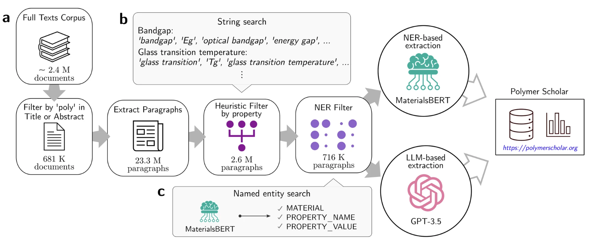
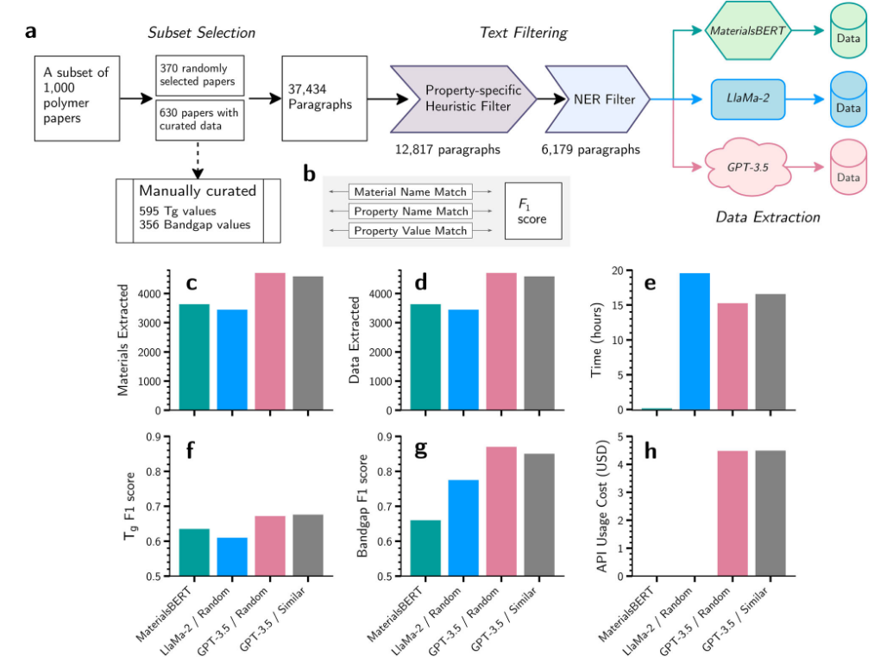
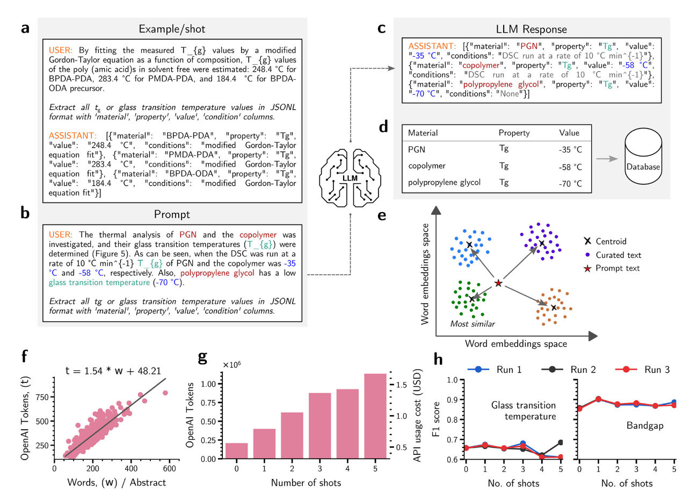
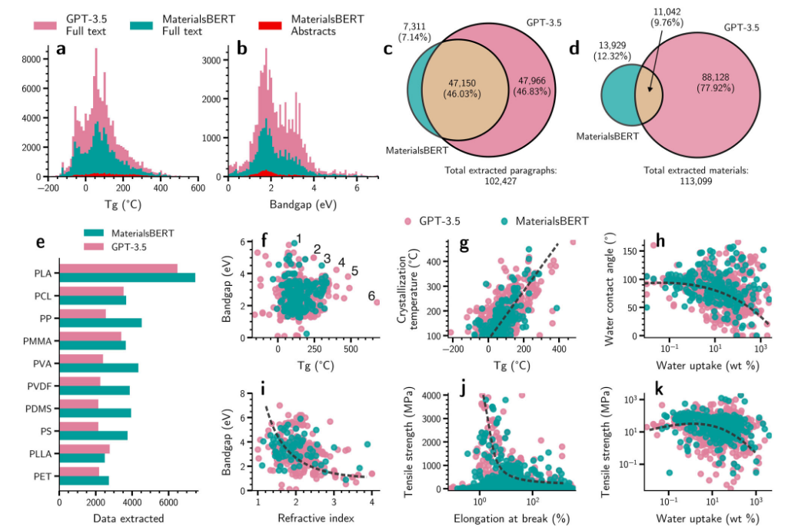

材料信息学领域受到缺乏数据准备和数据可访问性的困扰。尽管材料数据可以通过计算和物理实验系统地生成，但大量历史数据被困在已发表的文献中。科学期刊文章中不断发布越来越多的数据，但这些数据通常以非结构化自然语言文本格式存在，这给依赖结构化数据集可用性的现代信息学的即时利用带来了挑战。
今天分享的论文中提到该团队开发了一种混合人工智能框架，首次实现了从240万篇材料科学文献中自动化提取聚合物性质数据，成果远超此前仅依赖摘要的尝试。这项研究不仅验证了大语言模型（LLM）在科学文献挖掘中的潜力，更揭示了传统自然语言处理（NLP）技术与新兴AI工具的互补性。
数据困境：为什么聚合物科学需要AI？
聚合物科学的复杂性使其数据提取尤为困难。与无机材料不同，聚合物的命名常包含非标准化的别名、缩写和家族名称（如“PMMA”可能被写作“聚甲基丙烯酸甲酯”或“有机玻璃”），而性质描述则分散在全文的不同章节中。传统的命名实体识别（NER）模型如MaterialsBERT虽能识别单一实体，却难以在长文本中建立跨段落的关联。例如，一篇论文可能在引言中定义材料缩写，在方法部分描述合成条件，而在结果章节才给出力学性能——这种碎片化分布让自动化提取举步维艰。
更棘手的是科学文献的“隐性知识”问题。研究者常默认某些术语或单位是“领域常识”（如“Tg”指代玻璃化转变温度），但这对AI模型却是巨大挑战。此前，该团队基于MaterialsBERT从13万篇摘要中提取了30万条记录，已是当时最大规模的尝试，但全文数据的挖掘仍是一片蓝海。
破局之法：当NER遇见大语言模型
研究团队提出了一种采用LLM基于 NER 的管道的方法，专门用于从期刊文章的全文内容中自动提取聚合物的性质数据。，核心在于分阶段过滤 与模型协同 ：

提取聚合物特性数据的整体工作流程
a 聚合物特定文献选自 240 万篇材料科学期刊文章。多个过滤阶段在通过 MaterialsBERT 和 GPT-3.5 执行数据提取之前选择最相关的文档和文档段落。提取的数据最终存入 Polymer Scholar Web 界面的关系数据库。b 特定于属性的段落由基于字符串匹配和字典查找的启发式过滤器选择。c NER 筛选器标识具有可提取命名实体的段落。LlaMa-2 大型语言模型也进行了评估，但由于性能相对较低且推理时间较长，因此未用于最终的数据提取管道，如本文后面所述。
- 文献筛选：通过关键词（如“poly”）从240万篇文献中锁定68.1万篇聚合物相关论文。
- 段落过滤【双阶段过滤方案】：识别包含可提取属性数据的最相关段落
- 启发式过滤器：基于关键词词典初筛11%的段落；
- NER过滤器：用MaterialsBERT检测段落是否包含完整实体（材料、性质、值、单位），进一步筛选至3%。
- 数据提取： 独立识别材料和特性，建立关系，并以结构化格式提取信息
- MaterialsBERT：依赖规则关联实体，擅长标准化命名；
- GPT-3.5：通过少样本学习（few-shot learning）自动解析复杂关系。
表1. 两种模型在24种聚合物性质上的提取性能对比
| 性质 | GPT-3.5提取量 | MaterialsBERT提取量 |
|---|---|---|
| 玻璃化转变温度（Tg） | 125,585 | 75,722 |
| 带隙（Bandgap） | 63,361 | 30,732 |
| 拉伸强度 | 63,014 | 38,773 |
| 聚合物-属性记录（Total） | 672,449 | 390,813 |
具体来说，使用全文，LLM提取的数据量比 NER 管道提取的数据量高出 72%，比从摘要中（使用 NER 管道）提取的数据量高出 21 倍。在提取的数据中，热力学和力学性能在文献中更为常见，而气体渗透率的数据相对较少。

NER 和LLM管道的性能评估
a 材料 BERT、LlaMa-2 和 GPT-3.5 在从 1000 篇聚合物文献中提取数据时性能测量的管道概述
b 使用手动整理的数据表示 F (1) 分数测量
c, d 使用管道提取的材料和属性数据的总数
e 运行管道所花费的时间
f, g 分别计算 Tg 和带隙的 F (1) 分数
h 由于管道使用 API 而产生的成本
这一设计的精妙之处在于扬长避短 ：MaterialsBERT快速过滤低质量文本，降低GPT-3.5的API调用成本；而GPT-3.5则弥补了前者在复杂关系提取上的不足。例如，面对“PMMA与PS共混物的Tg为105°C”这样的句子，MaterialsBERT可能错误地拆分为两条记录（PMMA和PS各一条），而GPT-3.5能正确识别共混物整体性质。
少样本学习：如何让GPT-3.5“读懂”科学文本？
通过利用LLM理解文本中讨论的材料实体的特殊语义的能力，可以提取期刊文章中与聚合物相关的属性数据。然而，从LLM中获得所需的输出是一项具有挑战性的任务。
LLM的一个有趣的能力，被称为上下文少镜头学习，是它们从提示前的示例（通常称为“镜头”）中学习的能力，响应生成可以受到作为输入提供给模型的镜头和提示的充分影响。
- 少样本学习（Few-shot Learning）策略：
建立了包含595个玻璃化转变温度(Tg)值和356个带隙值的手动标注示例库，将精心选择的示例作为提示的一部分，引导模型学习正确的数据提取模式
- 结构化输出格式：
设计了明确的JSONL格式输出要求，包含'material'(材料)、'property'(性质)、'value'(数值)、'condition'(条件)等关键字段，通过示例展示期望的输出格式，帮助模型理解输出要求
- 相似度基础的示例选择方法：
使用MaterialsBERT文本编码器获取文本嵌入向量，对示例库进行k-means聚类(k=10)，选择与输入文本最相近的聚类中心对应的示例，这种方法比随机选择更有效，因为选中的示例与待处理文本更相关
- 提示工程（Prompt Engineering）：
设计清晰的指令性提示语，如"Extract all <property> values in JSONL format..."，根据不同属性类型替换<property>占位符
- 成本效益考量：
研究了文本长度与token数量的关系，分析添加示例数量对API使用成本的影响，发现token使用量与示例数量呈线性增长关系
通过结构化的示例和明确的输出格式要求，引导模型进行准确的信息提取。同时，通过相似度匹配来选择最相关的示例，进一步提高了模型理解和提取专业文本信息的能力。这种方法不仅提高了数据提取的准确性，还保持了较好的成本效益平衡。

使用大型语言模型进行数据提取
a 根据包含玻璃化转变温度和带隙值的手动整理数据集的文本生成的快照示例。
b 用于使用LLM提取数据的提示。
c GPT-3.5生成的响应
d 从响应文本中提取的Tg数据。
e 由630个手动策划的摘要文本的单词嵌入和选择与要提取数据的文本最相似的镜头形成的聚类示意图。
f 630篇与聚合物相关的摘要中，标记计数与字数之间的相关性。正的y截距归因于文本中常见的标点符号和符号的平均预期数量。
g Barchart描绘了代币数量的增加以及OpenAI API多次使用的最终成本。
h 多次拍摄对从手动整理的630摘要中提取的Tg和带隙数据准确性的影响。
这种方法将GPT-3.5的F1分数提升至0.87（带隙提取），远超随机示例选择。但研究也发现，增加示例数量未必提升性能——单示例反而最优，暗示LLM可能因“信息过载”而混淆。
性能与成本的博弈
本文的数据集来源于研究团队收集了一个语料库，其中包括过去二十年发表的240多万篇材料科学期刊文章。这些文章最初是通过Crossref数据库进行索引的，随后是11家出版商的授权下载，包括爱思唯尔、威利、施普林格、自然、美国化学学会和皇家化学学会。研究团队特别关注聚合物相关内容，通过在文章的标题和摘要中搜索“poly”一词，识别出681000份文档。从这些聚合物相关文档中提取信息涉及将单个段落视为文本单元，总共2330万个段落。

GPT 与 MaterialsBERT 提取数据的比较。
a, b 使用 MaterialsBERT 从摘要中提取的 Tg 和带隙数据以及使用 GPT-3.5 和 MaterialsBERT 管道从聚合物文章全文中提取的数据分布。c, d GPT-3.5 和 MaterialsBERT 提取的 Tg 和带隙数据与源段落中提取的聚合物名称之间的重叠。e 展示使用两个管道从全文中提取的前 10 种聚合物的数据总数条形图。f 同一源文章中提取的材料的带隙和 Tg 值的双变量图，图中标记的点在文本中讨论。g–k 显示所选属性对之间关系的代表性双变量图。虚线是视觉引导线。
在1000篇文献的基准测试中，GPT-3.5虽提取量更多（4706条 vs. MaterialsBERT的3631条），但成本高达4.48美元/百万token，而MaterialsBERT可本地免费运行。更值得注意的是数据互补性 ：
- GPT-3.5从47,966个段落中提取了MaterialsBERT遗漏的数据；
- MaterialsBERT则填补了GPT-3.5在7,311个段落中的空白。
这种差异揭示了两种技术的本质区别：规则驱动与语义驱动 的提取逻辑。例如，GPT-3.5擅长理解“聚丙烯二醇的Tg为-70°C”这样的隐含表述，而MaterialsBERT在标准化命名（如“PPG”）上更可靠。
从数据到知识：科学发现的下一站
这项研究的真正价值不仅在于技术框架，更在于其开放数据生态 。通过Polymer Scholar平台，研究者可交互式探索超过100万条性质数据，发现潜在的材料规律。例如：
- 带隙与折射率的负相关性验证了光学设计理论；
- 吸水率与拉伸强度的负趋势揭示了水分对聚合物的塑化效应。
这些发现为材料逆向设计提供了新抓手。在早期研究中，类似数据集已用于预测聚合物太阳能电池效率和逆合成路径，而全文数据的加入将进一步提升模型精度。
挑战与未来：AI能取代科学家吗？
尽管成果显著，论文仍坦诚了LLM的局限：
- 分子结构提取：聚合物化学式常以图像呈现，需结合计算机视觉；
- 跨段落关联：当前模型仅处理单段落，无法追踪全文中的材料别名；
- 表格与附录：PDF非结构化数据仍是“硬骨头”。
这些挑战恰恰指明了AI与人类协作的方向。正如作者所言：“LLM不是替代科学家，而是解放他们从繁琐的数据挖掘中脱身，专注于更高阶的假设生成与验证。”
结语：在确定性与可能性之间
GPT-3.5提取的聚合物性质数据量比基于摘要的传统方法多21倍。在分析带隙和玻璃化转变温度（Tg）的分布时，作者特别指出："GPT-3.5 展示了捕获更多数据的能力，包括许多极端属性值，而 MaterialsBERT 则成功捕获了分布中心的值"。这表明大语言模型能够获取更全面的数据分布，包括传统方法可能忽略的数值范围。我们不禁思考：科学发现是否也遵循“长尾效应”？那些沉睡在冷门文献中的非常规数据，或许正是突破性创新的种子。这项研究提醒我们，科学的进步不仅需要生成新数据，更在于如何从旧知识中挖掘新价值——而AI，正成为我们探索这份“已知未知”的罗盘。
“The real voyage of discovery consists not in seeking new landscapes, but in having new eyes.” ——马塞尔·普鲁斯特
真正的发现之旅不在于寻找新大陆，而在于以新的眼光看待旧世界。
https://www.nature.com/articles/s43246-024-00708-9